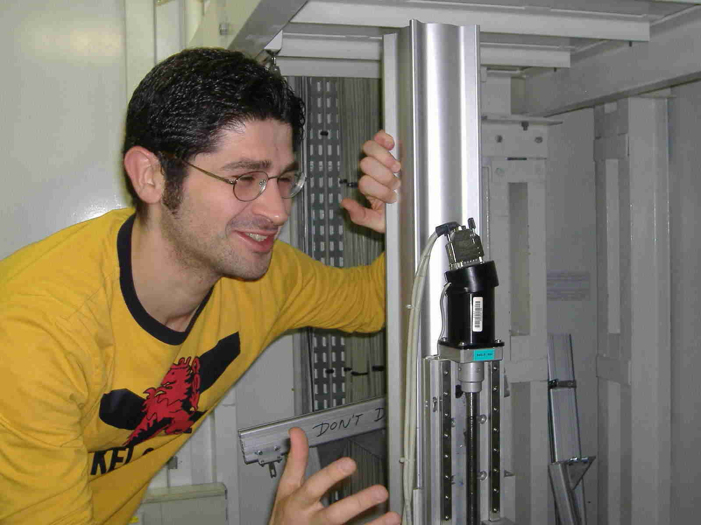

Collaboro con il gruppo di Astrofisica di Ferrara dal 2002, anno in cui ho cominciato il dottorato di ricerca, e mi occupo prevalentemente di Ricerca e Sviluppo di lenti di Laue. Ultimamente la ricerca procede abbastanza bene! Abbiamo realizzato un prototipo che funziona e ne stiamo sviluppando uno che funzionera' meglio!
Se siete curiosi, o meglio interessati (!), date pure un'occhiata alla mia tesi di Dottorato, dal titolo Hard X-ray Optics Development: Feasibility Study of a Laue Lens" e alle mie pubblicazioni.
I miei compiti nel gruppo sono anche altri: mi occupo in prima persona di acquisire ed elaborare dati sperimentali relativi a campioni cristallini utilizzando la facility presente in laboratorio, sviluppo software sia per lo studio delle ottiche che per l'analisi dati ed infine tengo in ordine diverse Linux box utilizzate dal gruppo.
Maggiori informazioni sul mio gruppo di ricerca sono disponibili sul sito web dedicato (che ho realizzato sempre io...).
 Vi lascio con una foto che mi ritrae in una tipica situazione da laboratorio! Vi si e' mai fuso un motore intanto che siete a Grenoble a fare delle misure per una settimana e lavorate almeno una dozzina di ore al giorno (e la notte)? A me si'!!!
I started my collaboration with the Ferrara Astrophysics Group in 2002, together with my PhD courses. My main task is the Research and Devlopment of Laue lenses. Recently a working prototype of a lens has been constructed and tested and we are working for building a new one that will work even better!
If you are curios or better interested (!) take a look to my PhD thesis, Hard X-ray Optics Development: Feasibility Study of a Laue Lens" and to my publications.
I am also actively involved in the facility measuring diffraction properties of crystal samples, in software development for both the focusing optics study and the experimental data analysis and I maintain several Linux boxes used by my colleagues.
More info on my research group are available on the dedicated website (which was written by me as well...).
I leave you with a picture of me in a tipycal situation that happens in labs! I was in Grenoble and an electrical translation stage just got fused!